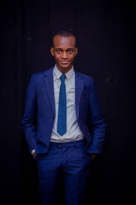
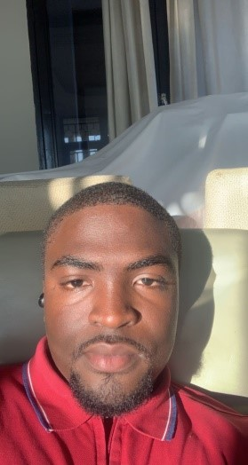
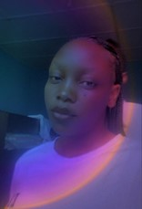

L2 LMD FASI
Joseph LOUKOUNYI MBOUYAMBA
est un jeune étudiant congolais de l’Université Protestante au Congo dans la Faculté des Sciences Informatiques, né le 22 février à Brazzaville. Diplômé d’état au Collège Notre Dame du Congo section Scientifique, option biologie-chimie. Passionné de football, technologie et surtout jeu vidéo.
Junior MUTEBA MUTEBA,
né le 11 Novembre 2002 à Kinshasa, en RDC, est un étudiant congolais en deuxième année licence en sciences informatiques à l'Université Protestante au Congo.
Il est 6ième des sept enfants de Mukuna Muluepabi Jeanine licenciée en communication et de MUTEBA NKOLAMUAMBA GUSTAVE expert en fiscalité, tous deux originaire du Kananga au Kasaï.
Il a quatre frères : Hervé, Yannick, Andy, Maestro et deux sœurs : Sandra et Monica.
Il reçoit une éducation baignée dans la religion catholique et passe toute son enfance à Kinshasa.
Il commence ses études maternelles à Monica, primaires à l'école Aurore, puis secondaires au collège des jésuites Saint Etienne où il obtient son diplôme.
Il est né le 12 Novembre 1220 à hawaii au état Unis.
Christian KOYO NSUNGU
est un étudiant congolais en deuxième année licence à l’Université Protestante au Congo(UPC)/Faculté des Sciences Informatiques(FASI).
Il est né le 12 Novembre 1220 à hawaii au état Unis.
Guels NAHESI MONI
est née en république démocratique du congo dans la ville de Kinshasa le 07 mai 200 , Et de parent congolaise tous deux vivants.
Mademoiselle NAHESI MONI GUELS est fille de son père NAHESI KIFUNGA JEAN et de sa mère MAKASI CHRISTINE , femme dévouée à l'éducation de ses enfants .
Dès l'obtention de son diplôme d'état en 2021 ,
mademoiselle NAHESI MONI GUELS va obtenir l'inscription à l'université protestante au congo ( u.p.c ) où elle poursuit ses études d'informatique
Trial R. LAPUTU
est né le 05 janvier 2035 à Kinshasa, est un étudiant congolais en deuxième année licence à l’Université Protestante au Congo(UPC) dans la Faculté des Sciences Informatiques(FASI).
Fils d’un officier supérieur de Force armée de la République démocratique du Congo et d’une femme d’affaires congolaise.Il est le quatrième enfant d’une famille de 8 enfants dont 5 filles et 3 garçons, il est élevé durant plusieurs années en République démocratique du Congo avant d’aller poursuivre ses études secondaires à Luanda, capitale de l’Angola, en Afrique australe.
Naissance et Origines
Laputu Zup-Mumpeya Trial resist naît le 05 janvier d’une certaine année à 13h43’ à la maternité de Binza Delvaux (Maternité des Sœurs) à Kinshasa.
Famille paternelle
Son père, Le colonel Laputu Mungakele Elvis, Titulaire des 3 Masters et Docteur en Management, Administration et gestion militaire du Collège des Hautes études de Stratégies et de défense (CHESD). Il est un officier militaire de l’armée congolaise, qui sert en tant que Directeur de Cabinet du Chef d’État-major général des forces armées de la République démocratique du Congo. du 17 juillet 2018 au 05 octobre 2022 date de la mise en retraite du Général d’armée Célestin mbala. Actuellement Chef de département du renseignement et sécurité frontalière à l’état major renseignement.
Le Dr Laputu est originaire du secteur d’imbongo l’un des 10 secteurs du territoire de Bulungu chef-lieu du territoire éponyme dans la province du Kwilu(ex Province du Bandundu) en République démocratique du Congo. Son arrière-grand-père était chef de district et dans le village tango-gemena à la fin du XIXe siècle et au début du XXe siècle.
Famille maternelle
Sa mère, Octavia Tubadi Miriam né le 03 juin 1221 dans l’ex province du Katanga à lubumbashi. Diplômé en Commerciale et administrative avant de poursuivre de formation en Esthétique cosmétique parfumerie, elle est originaire de la province du Haut lomami. La famille Tubadi est chrétienne, dont le père était militaire et officier à l’Etat major général de l’armée congolaise(mort empoisonné en novembre 1998) et sa mère est une femme commerçante vivant à Kinshasa.
Jeunesse et études
• Trial commence ses études à l’école anglophone Little Champion avant poursuivre à l’école catholique Saint Vincent de Paul. Il obtient son certificat d’école primaire à l’école Saint Vincent de Paul dans la ville de province de Kinshasa. En 2021 il décroche son diplôme d’État à L’école Révérend Kim site de Lingwala en section Scientifique, option Bio-Chimie.La même année, il commence ses études à l’université protestante au Congo (UPC).
Jaël MULEKA BAMONA,
étudiante congolaise en deuxième année licence à l’Université Protestante au Congo(UPC)/Faculté des Sciences Informatiques(FASI). Née le 06 Mai 1220 à Kinshasa en RDC . Jaël est née dans une famille de 4 enfants dont deux filles et deux garçons et en est la deuxième.
 Emmanuel ISIA AMUNDALA
Emmanuel ISIA AMUNDALA
est un etudiant congolais en deuxième année licence à l’Université Protestante au Congo (UPC) en Faculté des Sciences Informatiques (FASI) il est né à kinshasa le 18 octobre 2000 . Emmanuel est le cadet d’une famille de 5 enfants dont 4 garçons et une fille .
Danella DOKOTA KANGA
est une étudiante congolaise en deuxième année licence à l’Université Protestante au Congo (UPC)Faculté des Sciences Informatique (FASI). Elle est née le 06janvier 2003 à Kinshasa en RDC.
Danella est la cadette d’une famille de 12 enfants dont 5 garçons et 7 filles.
Danella a fait ses études maternelles ainsi que primaires au complexe scolaire les Bambins, ses études secondaires et humanités dans l’écoles : Lycée Motema Mpiko et collèges Frère Alingba.
Elle a eu son diplôme d’état en 2021 avec une note de 60%.
 Benny ALOMA SALEH
Benny ALOMA SALEH
est une étudiante congolaise en deuxième année licence à l’Université Protestante au Congo(UPC)/Faculté des Sciences Informatiques(FASI).Elle est née le 27 juillet 2003 à Kinshasa aux environ de 23h. Benny est la 3eme d’une famille de 9 enfants.Diplômée d’état à l’école TURCO-CONGOLAISE MAARIF section scientifique,option mathematiques-physique.Sa couleur préférée est le rouge.Elle est passionné par ses études, l'informatique.Elle a toujours voulu devenir ingénieure aéronautique précisément mécanicienne.

Rilord FIMPA MALANGU
est un étudiant congolais en deuxième année de Licence à l’UNIVERSITE PROTESTANTE AU CONGO (UPC)/Faculté des Sciences Informatiques (FASI). Il est né le 13 Juin 2003 à Kinshasa en RDC. Rilord est le deuxième d’une famille de 3 enfants, dont il est le seul garçon. Fils de Cathy Kabonge et Guylain Fimpa, il a débuté ses études à Cours Sénèque, puis au Collège Révérend Kim, et enfin à l’Institut Monseigneur BOKELEALE.
Sabrina MUNYAPARA KANZEWU
est une étudiante congolaise en deuxième année licence à l’Université Protestante au Congo (UPC)/Faculté des Sciences Informatiques (FASI). Elle est née le 22 juillet 2004 à Kinshasa aux environ de 07. Sabrina est la 3eme d’une famille de 7 filles. Diplômée d’état à l’école Ku Ntwala section scientifique, option mathématiques-physique avec 71% de moyenne. Sa couleur préférée est le rose. Son animal préféré est le lion. Elle est passionnée par les études qu’elle est entrain de faire , L’Informatique. Elle aspire être consultante en sécurité informatique.
 Elton AVIOTI ITO
Elton AVIOTI ITO
De son vrai nom Elton Avioti Ito, Né à Kinshasa le 21/05/2002 Etudiant en deuxieme année, faculté des sciences informatiques à l’université Protestante au Congo, originaire de la Province de Haut-Uele.
Diplômé d’Etat en Section Scientifique, Option : Chimie-Biologie en 2021, Etude secondaire au Complexe Scolaire Frère Nkadilu et primaire au petit Collège Bosembo.
Fils du défunt Néné Avioti et Gisèle Dimo, Fils unique de cette union.
Henock MAZAMBI
est un développeur web passionné, né le 24 septembre 2003 à Kinshasa, en République démocratique du Congo. Issu d'une fratrie de cinq enfants, avec trois garçons et deux filles, il a grandi dans un environnement familial chaleureux et bienveillant.
Dès son plus jeune âge, Henock a montré un intérêt prononcé pour la technologie et l'informatique. Son attrait pour la création de sites web et les possibilités offertes par le monde numérique l'ont poussé à se lancer dans une carrière de développeur web.
Actuellement, Henock poursuit ses études en deuxième licence du système LMD à la faculté des Sciences informatiques. Son parcours académique lui a permis d'acquérir une solide base de connaissances en programmation, en développement web et dans d'autres domaines liés à l'informatique.
Au cours de ses études, Henock a eu l'occasion de travailler sur plusieurs projets, tant individuels que collaboratifs, ce qui lui a permis de mettre en pratique ses compétences et d'affiner ses capacités de résolution de problèmes. Son dévouement, sa curiosité et sa persévérance ont été des qualités clés qui l'ont aidé à surmonter les défis auxquels il a été confronté.
En dehors de ses études, Henock est également passionné par l'apprentissage continu et reste constamment à l'affût des dernières avancées technologiques dans le domaine du développement web. Il participe à des formations en ligne, suit des tutoriels et travaille sur des projets personnels pour affiner ses compétences et rester à jour dans un domaine en constante évolution.
Avec son expertise grandissante en développement web, Henock aspire à contribuer de manière significative à l'industrie du numérique et à créer des solutions innovantes qui répondent aux besoins de la société. Il est motivé par la possibilité de concevoir des sites web interactifs, intuitifs et esthétiquement agréables, tout en assurant une expérience utilisateur optimale.
 Sephora MALU,
Sephora MALU,
née le 20 Novembre 1800 à kinshasa dans une famille composée de 5 enfants dont 3 filles et 2 garçons. Elle commencera ses études maternelles à l’E.P LISANGA où elle sera remarquée par ses enseignants par son intelligence et sa discipline ; cela va lui valoir le prix de la meilleure élève de sa promotion. Elle va continuer ses études primaires dans la même école où elle va obtenir son certificat de fin d’études primaires avec 87% qui lui permettra de commencer ses études secondaires au Lycée Monseigneur Shaumba où elle sera deuxième lauréate de sa promotion aux examens d’Etat avec 79%.
Passionnée par la médecine, elle ira s’inscrire à l’Université Protestance au Congo en sigle U.P.C en médecine, ce qui implique un test de recrutement vu l’organisation interne de ladite université. Une semaine avant la date prevue du test elle tombe malade ,le premier jour du test hospitalisée elle va devoir s’efforcer pour arriver sur le lieu du test et le faire avec plusieurs difficultés ne pouvant pas se concentrer sur ledit test , le deuxième jour impossible pour elle de s’y rendre pour passer son test à cause de son état de santé. Après quelques jours les résultats ont été affichés et son nom n’y figurait pas parmi les personnes retenues.
Abattue, elle va devoir continuer avec une autre faculté et son choix s’est porté sur l’informatique. Elle s’est rendue au bureau d’inscription et a fait son deuxième choix cette fois-ci qui n’exigeait pas de test vu son résultat aux examens d’Etat.
Au début un peu démoralisée suite à son échec mais au fil du temps elle va découvrir le goût de l’informatique et elle s’y est totalement lancée pour ne pas dire qu’elle a tout oublié de la médecine qui était sa passion mais l’informatique a prit une place très importante qu’elle n’était auparavant.
Aujourd’hui elle travaille sur des projets ou idées informatiques qui avec le temps pourrait se concrétiser et aider la médecine ainsi que d’autres domaines à connaître une suite de développement grâce encore à l’informatique.
 Heritier MALU
Heritier MALU
est né le 25 Avril 1960 à Los Santos
étudiant à l 'Université Protestante au Congo (UPC) en deuxième licence
dans la faculté de sciences informatiques(FASI) ..

Je m’appelle tabu kalume alberto. Fils de Stanis tabu lombangi et henriette nyongila ekanga. Je suis cadet d’une famille de 4enfants. Je suis étudiant en deuxième licence à l’université protestante au Congo dans la faculté des sciences informatiques. Je suis né à Kinshasa le 12/06/2002. Dans la commune de ngri ngiri sur l’avenue LUKA 199A Quartier Assossa non loin de la maison communale. J’ai fait mes études primaires au collège saint pie x ngiri ngiri toujours. J’ai commencé mes études secondaires toujours au collège saint pie x et J’ai terminé mes études humanitaires au collège saint Michel à bandal en 2020. Après avoir fini mes études humanitaires, j’ai entamé une nouvelle époque : c’est l’université. En 2020 j’ai commencé mes études universitaires à l’université protestante au Congo dans la faculté des sciences informatiques. J’ai aussi une petite carrière de foot.
En 2006 j’ai commencé ma carrière dans un club à bandal (aigle vert) j’ai joué là-bas de 2006 à 2014 et en 2015 J’ai trouvé un club de deuxième division à kinatmbo (camp Babylone) là-bas j’ai fait deux ans. De 2017 en 2020 je n’avais pas de club et Dieu a fait grâce en 2021 J’ai trouvé un club de première division ils m’ont accepté malgré j’avais un niveau très bas j’ai travaillé et aujourd’hui je suis capitaine de ce club.
 Massimo LUNDULA ONEMA
Massimo LUNDULA ONEMA
est un étudiant congolais en deuxième année de licence à l’Université Protestante au Congo(UPC) dans la Faculté des sciences informatique (FASI). Il est né à Kinshasa le 03 octobre d’une certaine année. Massimo est le cadet d’une famille de 4 enfants dont il est le seul garçon, son père s’appelle Marcel ONEMA et sa mère Louise NDAYA. Il a fait ses études primaires au complexe scolaire éveil et ses études humanitaires au collège saint Théophile de lemba où il a obtenu son diplôme d’état.
Beni LUMBU WAZENGA
est un étudiant congolais en deuxième année licence à l’Université Protestante au Congo (UPC)/Faculté des Sciences Informatiques (FASI). Il est né le 10 février 0000 à Kinshasa en RDC. Beni est le cadet d’une famille de 3 enfants dont 1 fille et 2 garçons.
 Emmanuel LUBANZADIO MILANDU,
Emmanuel LUBANZADIO MILANDU,
né le 10 Mai 2006 à Kinshasa, en RDC, est un étudiant en sciences informatiques à l'Université Protestante Au Congo.
Il est 2iem des deux enfants de LUBANZADIO Benjamin et MAKINUTEWA Hadassa dont la sœur est Rejoy. Sa famille est d'origine Congolaise.
Il commence ses études maternelles à KAMA, primaires à l'école Chrétienne La Source De Vie, puis secondaires à l'institut mgr Bokeleale où obtient son diplôme.
 Marie-Paul MONGANZA LILONGA
Marie-Paul MONGANZA LILONGA
Né dans la ville de Kinshasa le 17 Août 2003.
Mon parcours secondaire a été effectué au collège Pierre Nengende Saint-Dominique à Limete ou j’ai acquis connaissance et savoir vivre. Je suis passionné de chant et adore passer mon temps libre à jouer au basket-Ball.
Pour l’instant j’évolue à Université Protestante du Congo où je suis étudiant en deuxième Licence dans la Faculté des Sciences Informatiques.
Israël MILAMBUKABWE
est un étudiant congolais en deuxième année licence à l’Université Protestante au Congo(UPC)/Faculté des Sciences Informatiques(FASI). Il est né le 18 juin d'une certaine année dans la ville province de Kinshasa en RÉPUBLIQUE DÉMOCRATIQUE DU CONGO. Israël est troisième enfant d’une famille de 5 enfants dont trois garçons et deux filles
Gisèle MIJIMBU BOSANGE
est une étudiante Congolaise en deuxième année de licence a l’Université Protestante au Congo (UPC) /Faculté des sciences Informatiques (FASI)
Elle est née le 03 .07.2003 à Kinshasa au Congo
Gisèle est la première chez sa mère et la troisième fille chez son père
Elle a fait sa primaire à Mpieko et chez les Amis de David à Kananga pendant son séjour chez ces grand parent qui étais devenu une année
Elle rentre à Kinshasa en 2016 pour les études supérieures
La secondaire elle la fait au Collège Frère Alingba
Elle est fauchée et n’a pas encore un travail
Elle espère travail à l’Unicef ou Dans une Entreprise hors du pays mais je ne crois pas que sa mère la laissera partir
 Meliane MIYISA KASINDO
Meliane MIYISA KASINDO
est une étudiante congolaise en deuxième année licence à l’Université Protestante au Congo(UPC)/Faculté des Sciences Informatiques(FASI). Elle est née le 03 janvier à Kinshasa . Meliane est la deuxième d’une famille de 6 enfants dont cinq garçons et deux filles.
David MBIYA NGOIE
Etudiant de l’université protestante au Congo (UPC) en deuxième année de licence (LMD)/Faculté des sciences informatique(FASI).il est né le 25 juillet 2001 à Kinshasa .David et l’avant dernier d’une famille de 4 garçons, dont lui il occupe la 3eme place
Michael MBENDE BOOTO
est un étudiant congolais en deuxième année licence a l’université Protestante au Congo (UPC) / Faculté des sciences informatiques (FASI). IL est né le 16 juin 2002 à Kinshasa, Michael est l’aine d’une famille de 4 enfants dont 2 filles et 2 garçon. Passionné de la lecture de la parole de Dieu et de la musique gospel précisément le RAP, dont il est auteur de plusieurs freestyles disponibles sur tous ses comptes Facebook, Instagram… Il est fils d’un professeur et chef de bureau a la fonction publique et d’une mère commerçante…IL aime l’Europe et aimeriez poursuivre ses études de Master aux USA dans la cyber sécurité informatique car c’est son rêve.

Joseph MAZYAMBO NTUMBA
est un étudiant congolais en deuxième de licence a l’université protestante au Congo (UPC) facultés des sciences informatique (FASI).Il est né le 22 janvier 2002 à Kinshasa. Joseph est 8ème d’une famille de 9 enfants composé de 5 garçons et 4 filles. Il a fait son école primaire a Révérend Kim, son secondaire a Bokeleale et la fin de son humanités a sévigné.
Caleb NDEKE MAYELE
est un étudiant congolais évoluant en deuxième année de licence dans la faculté des sciences informatique à l’Université Protestante au Congo (UPC).
Il est né le 26 Aout 200** à Kinshasa, il est 5eme d’une famille de 7 enfants dont le père est Congolais et la mère Belge.
Caleb est passionné par le football, la politique, l’informatique et également par les écritures, il est auteur de différents texte que vous pourrez découvrir en le contactant par son adre
Exaucé Emmanuel MVUEZANA
est un étudiant congolais en deuxième année licence à l’Université Protestante au Congo(UPC)/Faculté des Sciences Informatiques(FASI). je suis né le 9 août 2002 à Kinshasa . je suis le 7 ème d’une famille de 9 enfants dont 6 filles et 3 garçon.
je suis développeur , j'ai 20 ans.
Ma passion pour la conception des sites web commence alors que j'étais encore élève a ITI Bonsomi, alors que je mettais mes pieds pour la première fois à l'Université (upc) que tout a changé.
je décide de devenir développeur web indépendant après avoir bosser plusieurs site .
Mon expérience acquise au fil des projets me permet de mieux comprendre les attentes d'un client et de répondre précisement au besoin demandé en fonction du domaine d'activité.
Magloire MUTABUNGA SIFA
est
née le 12 décembre 2002 à Kinshasa /RDC.
Elle a effectué ses études primaires et secondaires à l’institut BOBOKOLI section scientifique option Biologie- chimie,
Elle poursuit notamment son cursus universitaire à l’Université Protestante au Congo(UPC)/Faculté des Sciences Informatiques(FASI), en deuxième année licence (LMD). Magloire est la 6 éme d’une famille de 10 enfants dont 7 filles et 3 garçon.

Dorcas MUJINGA TSHIDINGI
est née le 15/09 au kasai oriental dans une famille de 14 enfants dont je suis la 4 ème
Elle est étudiante en deuxième année licence ( LMD ) à l’Université Protestant au Congo (UPC)faculté de sciences informatiques (Fasi).
Daniel NGOMABIE MWAMBA
est un étudiant de nationalité congolaise qui est en deuxième année licence (lmd) à l’Université Protestante au Congo(UPC) dans la Faculté des Sciences Informatiques(FASI). Il est né le 25 novembre 1988 à Kinshasa en République Démocratique du Congo. Il est détenteur d’un diplôme d’Etat en Mathématique Physique.
Belvie BOKULU BONIFACE
est un étudiant congolais en deuxième année licence à l’Université Protestante au Congo(UPC)/Faculté des Sciences Informatiques(FASI). Il est né à kinshasa d’une petite famille de 6 enfants, 5 garçons et une fille dont il est quatrième.
Kevin Arthur NTAYINGI MWA-MUR
Kevin Arthur Ntayingi Mwa-mur est un étudiant congolais en deuxième année licence à l’Université Protestante au Congo(UPC)/Faculté des Sciences Informatiques(FASI). Il est né le premier octobre 2003 à KINSHASA en République Démocratique du Congo . Deuxième enfant d’une famille de 10 enfants ; il a poursuivi ses études secondaires au collège Saint Joseph/Elikya.
Gloria ZAMWIDUKO PATAULE
est une étudiante congolaise en deuxième année licence à l’Université Protestante au Congo(UPC) dans la faculté de sciences informatiques(FASI), née le 08 juin 2002 à Kinshasa ,ainée d’une fratrie de trois filles. Diplômée en chimie-biologie à l’institut bobokoli/Binza-delvaux